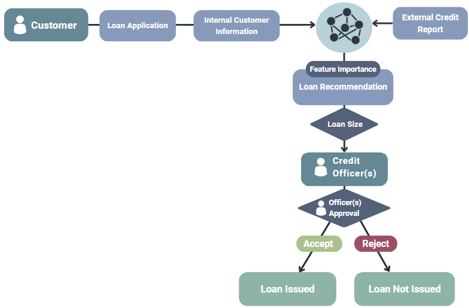
Sector: Private
Task: The AI system processes loan applications and generates approval recommendations. The recommendation is reviewed by one or more credit officers. The number of human reviewers depends on the size of the loan request, small loans may be reviewed by a single officer, while larger applications require the approval of multiple officers. These officers retain total authority to accept or reject the system recommended application result.
Intent: The main intent behind the AI is to support credit officers and increase efficiency in the lending process.
Risks: There are potential fairness risks if the system embeds bias from historic data. Transparency on how recommendations are generated is critical. Over reliance on the systems output could reduce critical evaluation by officers, especially for borderline applications.
Outcome Governance Category: Human-Approved AI
Institutional Governance Examples: industry banking standards, data protection regulation, financial regulation, the number of analysts reviewing the loan depends on muliple factors (e.g., size of loan, credit trustworthiness of applicant)
Explanation of workflow:
Input: A customer's loan application, along with internal customer information and external credit reports are passed to the AI system.
Process: The AI system generates an approval recommendation for the application and feature importance scores which show how much each input feature influenced the system’s output.
Output: One or more credit officers review the AI's recommendation. The loan will ultimately be approved or denied, depending on the agreement of the credit officers with the AI recommendation.
">
Credit Lending Classifier
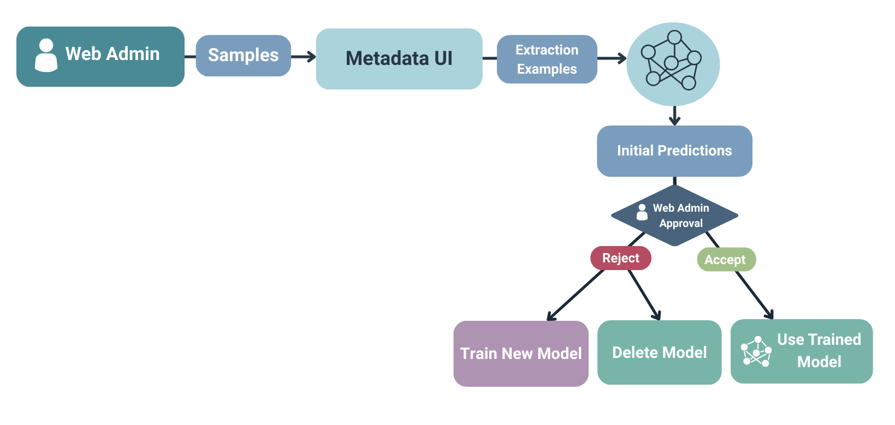
Sector: Civil Society
Task: A user can train an AI model which can extract metadata from text or documents using this AI system. If the user is satisfied with the performance of the outputted AI model, then they can use it.
Intent: The main impact of this AI system is to save time for users who cannot afford to scan through hundreds of PDFs or paragraphs. The AI supports efficiency.
Risks: The trained AI model could make mistakes when the user uses it.
Outcome Governance Category: Human-Approved AI
Institutional Governance Examples: trained AI model is saved on a private server where only the user can access it (they cannot download it), allow for retraining of the produced AI model with different or new data
Explanation of workflow:
Input: The user submits samples to the metadata UI, which then extracts the necessary information to train an AI model.
Process: The AI generates its intial predictions based on the metadata structure given to the system.
Output: The user reviews the newly trained model's predictions and either: accepts the predictions so the trained model is finalized, or rejects the predictions so the trained model is deleted or re-trained with updated data.
">
Metadata Extractor
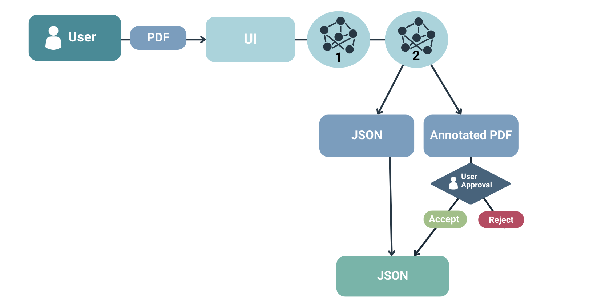
Sector: Civil Society
Task: A user requires their PDF to be segmented so inputs it to an AI system and then they receive the segmented PDF in a JSON to use.
Intent: The AI system supports users in collecting information they need for different tasks.
Risks: The AI could make mistakes when annotating and segmenting the PDF.
Outcome Governance Category:
Institutional Governance Examples: the AI models have been trained with state of the art techniques for PDF segmentation
Explanation of workflow:
Input: A user submits a single PDF to a UI.
Process: The UI calls on an already-trained AI model 1 to segment the PDF, and then the output is fed as the input to another already-trained AI model 2 which classifies the segmentations. The outputs of the two AI models are a JSON and an annotated PDF.
Output: The user checks the output of the PDF. If they are satisfied with the annotated PDF, they can accept it and use the JSON for their task. Otherwise, if they reject the annotated PDF, then the user chooses to not use the JSON.
">
PDF Segmentator
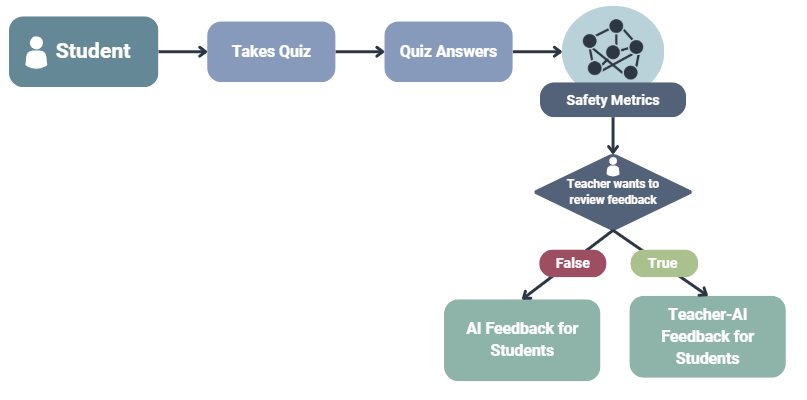
Sector: Public
Task: Students take practice quizzes to prepare for exams and this AI system provides them with personalized feedback given the students' answers. Teachers can view the students' responses and performance as well as the AI's feedback.
Intent: The AI system aims to provide students with personal feedback to speed up their learning process. It also saves teachers time by marking questions for students.
Risks: The AI system can make mistakes which could confuse students.
Outcome Governance Category: Conditionally Autonomous AI
Institutional Governance Examples: safety metrics and thresholds chosen, human oversight option for teachers if they want to review feedback before sending it to students
Explanation of workflow:
Input: A student takes a quiz and the quiz answers are inputted into the AI system.
Process: The AI system reviews the answers and generates feedback. The generated feedback responses are checked with safety metrics that relate to certain questions (e.g., is the answer scientifically correct, is harmful language used, and is it aligned with the student's knowledge?). If the score is below a certain threshold, then the feedback is sent to the teacher and the feedback is regenerated.
Output: Once the AI system's feedback responses pass the safety metrics and/or the teacher approves of it, then the answer feedback is provided to the student.
">
Personalized Feedback Assessor
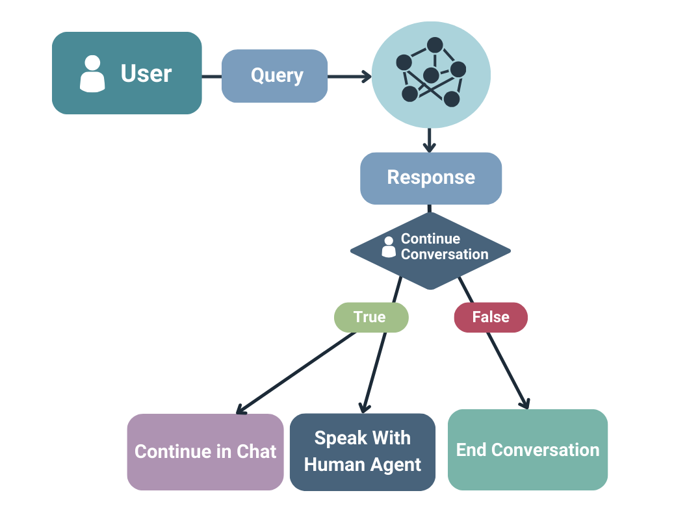
Sector: Public
Task: This AI system generates responses to questions that users ask in a chat format. The AI pulls from information from the institution's website and can route users to speak with a human representative if required.
Intent: The AI system provides immediate and around the clock responses to user questions, as well as reduce the workload of employees.
Risks: Incorrect or poor-quality responses could misinform users. Sensitive information shared in the chat may not be completely secure in extreme instances.
Outcome Governance Category: Human-Led with AI-Assistance
Institutional Governance Examples: AI cyber-security standard, algorithmic transparency standard
Explanation of workflow:
Input: A user submits a query to the AI system.
Process: The AI system generates a response to the user in the chat. The user views the response and decides if they want to contine the chat. If the user wants to continue the chat, they continue asking questions.
Output: If the user wants to continue the chat but speak to a human agent, they can be routed to an employee who can view their chat history and support them. If the user does not want to continue the chat, they can exit and end the chat.
">
Court Support Chatbot
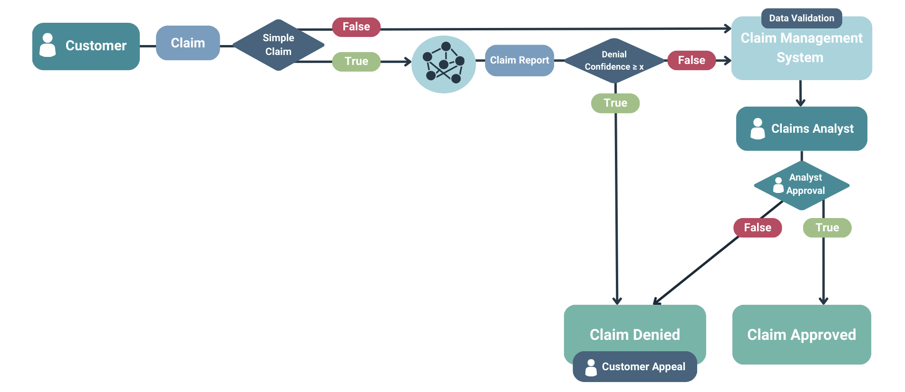
Sector: Private
Task: When customers submit straightforward automotive insurance claims a summary and recommendation is generated by the AI system.
Intent: The AI system is meant to increase productivity and profit by reducing the number of simple claims analysts must review.
Risks: There is a risk of incorrectly denying legitimate claims if the model is overconfident and mistaken.
Outcome Governance Category:
Institutional Governance Examples: denial confidence threshold choice, validating data provided, customer can appeal
Explanation of workflow:
Input: A customer submits an insurance claim.
Process: If the claim is unconfident, then it will be sent to a claim management system which valides the input data. If the claim is confident (in this case, if it fits a known pattern in historic data), then the AI system processes it and outputs a claim report. If the report recommends denying the claim with low confidence, then it will be sent to the claims management system for review.
Output: If the AI generated report recommended denying the claim with high confidence, then the claim is automatically denied. Otherwise, a claims analyst reviews the claims passed through the claims management system and decides whether to approve each claim.
">
Insurance Claims Classifier
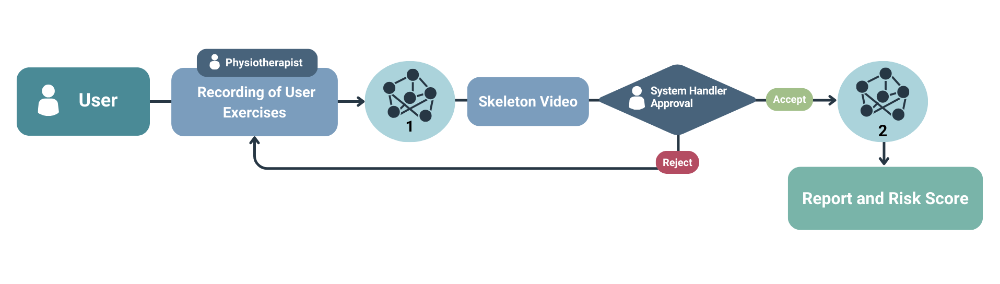
Sector: Private
Task: A user (a person over 65 years old) who has limited physical mobility uses this AI system to obtain a risk assessment with respect to their physio-related needs. The report with their risk score is for the user only but they could share it with any carers to request more support if necessary. The users often use the AI system multiple times to check-in on their mobility and physical health overtime.
Intent: The report with their risk score is for the user only but they could share it with any carers to request more support if necessary. The users often use the AI system multiple times to check-in on their mobility and physical health overtime.
Risks: The person could injure themselves while doing the exercises or become fatigued.
Outcome Governance Category: Autonomous AI
Institutional Governance Examples: data protection regulation, a human physiotherapist must be present, user's ability to redo an exercise up to 3 times
Explanation of workflow:
Input: The user completes 12 exercises while being video recorded under the supervision of a human physiotherapist for safety. The video of the user is fed into an already trained AI model 1.
Process: The AI model 1 outputs the user's skeleton tracked from the skeleton video using deep learning and computer vision technology. An AI system handler reviews the skeleton video and decides if it is usable or if the user needs to re-complete the exercises in a new video. If the skeleton video is approved of, an already-trained AI model 2, a rule-based system, takes the skeleton video as input.
Output: Then, the AI model 2 outputs a PDF report for the user.
">
Physio-Risk Reporter
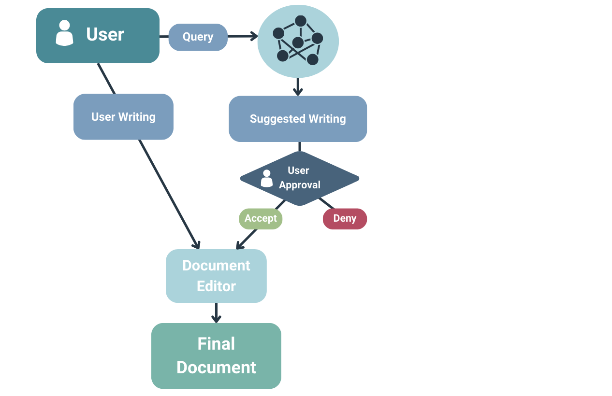
Sector: Private
Task: A user who needs support writing, editing their writing, or brainstorming their ideas for writing can use this AI system.
Intent: The AI system is meant to help users better communicate in their writing and to support human creativity, efficiency, and productivity.
Risks: The user could become over-reliant on the AI system and begin to de-prioritize their own creativity and skills. The AI system could hallucinate or misunderstand the user's request.
Outcome Governance Category:
Institutional Governance Examples: sensitivity filters from the AI provider
Explanation of workflow:
Input: The user submits a query to the AI system that includes a request for support in writing or editing.
Process: The AI system then provides some suggested writing in the document editor. The user can review the AI's output and accept or deny the change. The user can also write at any point.
Output: When the user is satisfied with their writing in the document, the workflow finishes.
">
Writing Assistant
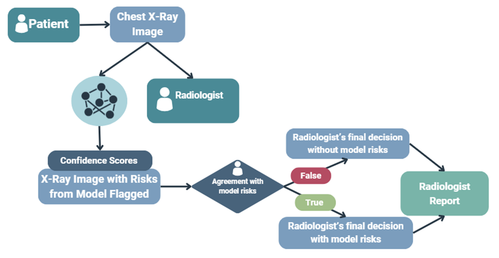
Sector: Public
Task: The AI system reviews a chest X-ray and provides an assessment of the risks flagged and notes where on the image the risks are for a radiologist to review. The AI system prioritizes more risky X-rays so the radiologist sees them first.
Intent: The aim of the AI system is to increase the speed and accuracy of chest abnormality screening and prioritize the highest risk patients for review.
Risks: The radiologist could become over-reliant on the AI system’s recommendations and exhibit automation bias. The AI system could make mistakes which could lead to a misdiagnosis of a patient or to a risk going undetected.
Outcome Governance Category: Human-Led with AI-Assistance
Institutional Governance Examples: data protection regulation, radiation regulation, prioritization score of X-rays for speedying up radiologist review, post-deployment monitoring for automation bias
Explanation of workflow:
Input: The patient's chest X-ray image is sent to the AI system and the radiologist.
Process: The AI system analyzes the X-ray image and makes a new image that overlays the original with points of concern flagged with confidence scores attached. The radiologist sees the original X-ray image first and then the image from the AI system.
Output: Based on the level of agreement with the AI system, the radiologist writes their final decision in a report where they make a diagnosis and recommend next steps.
">
Chest X-Ray Abnormality Detector
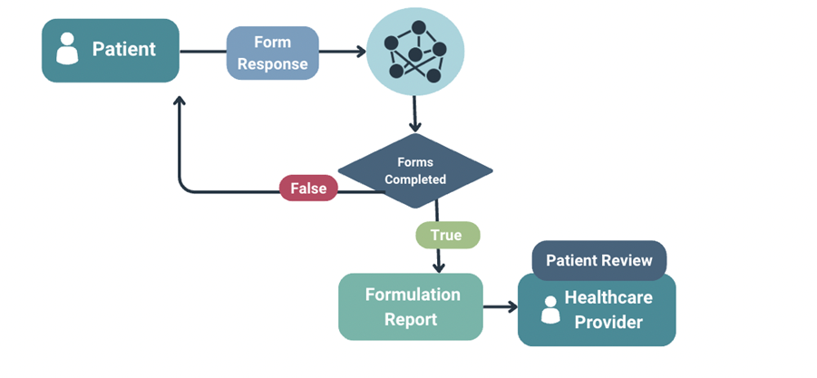
Sector: Public
Task: The AI system generates a preliminary patient report for healthcare providers based on their responses to intake forms.
Intent: The AI system is intended to improve intake efficiency and thoroughness.
Risks: Patients could be mislabelled if they incorrectly answer or skip questions.
Outcome Governance Category: Autonomous AI
Institutional Governance Examples: data protection regulation, medical device regulatory guidance, digital clinical safety standards, digital clinical safety assurance, equality and health impact assessment, lived experience digital group must sign off, project and clinical boards must sign off
Explanation of workflow:
Input: Patients respond to questions on mental health intake forms.
Process: The AI system will continue to provide the patient with forms until they are completed. It then generates a formulation report on the patient.
Output: The formulation report is reviewed by the healthcare provider alongside the patient.
">
Mental Health Triage Tool
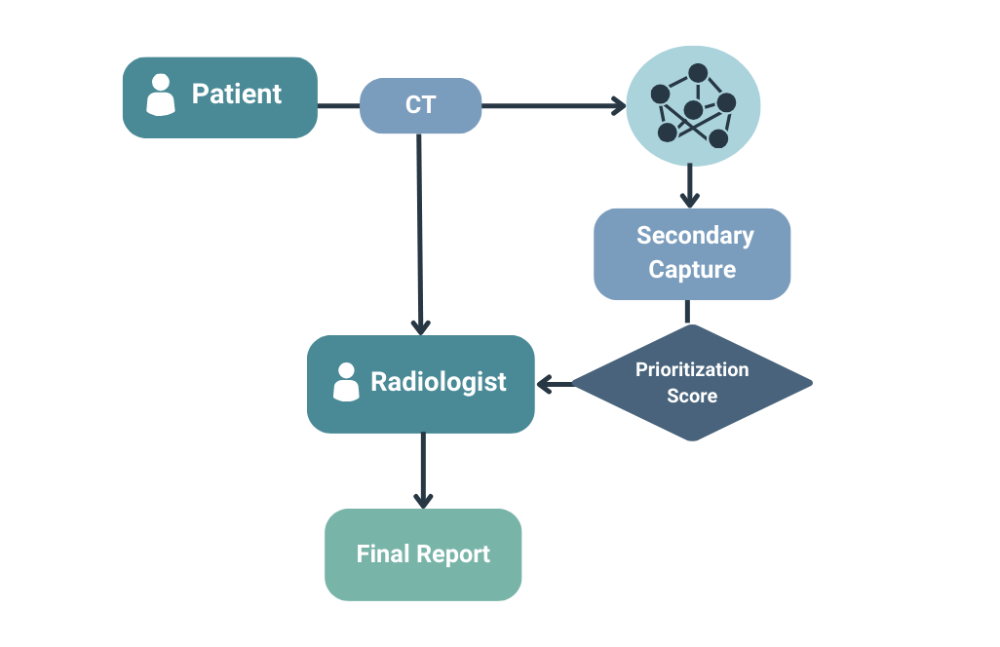
Sector: Public
Task: When a patient receives a CT scan, an AI system analyses the scan, generates a secondary version with potential concerns flagged, and assigns a prioritization score to speed up its review by a radiologist.
Intent: The AI system is meant to support radiologists in spotting risks in the CT scan and ensure that urgent cases are viewed by radiologists more quickly.
Risks:
Outcome Governance Category: Human-Led with AI-Assistance
Institutional Governance Examples: data protection regulation, data opt-out scheme
Explanation of workflow:
Input: The patient receives a CT scan which is sent to the AI system and the radiologist(?).
Process: The AI system generates a secondary capture of the scan and provides a prioritization score.
Output: The radiologist reviews the original and secondary capture CT scans and creates their final report on the patient.
">
CT Scan Risk Detector
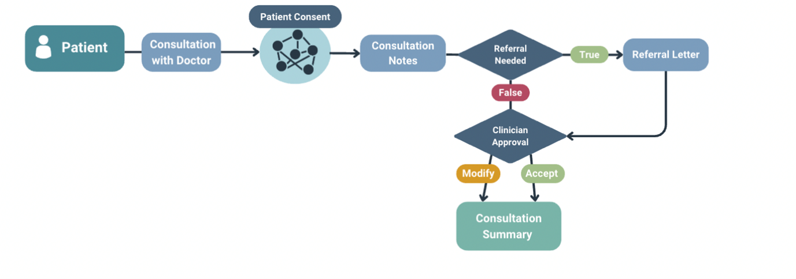
Sector: Public
Task: When a patient has a consultation with their doctor, this AI system generates notes and a referral letter if needed for their doctor to review and use as needed.
Intent: This AI system is meant to improve note taking efficiency and thoroughness.
Risks: Clinicians could become over reliant on the system for documentation. The AI system could misunderstand something the patient said.
Outcome Governance Category: Human-Led with AI-Assistance
Institutional Governance Examples: data protection regulation, digital clinical safety standards, equality and health impact assessment
Explanation of workflow:
Input: The patient's consultation with their doctor is recorded and passed to the AI system, with patient approval.
Process: The AI system generates consultation notes and predicts if the patient requires a referral. If so, it drafts a referral letter for the clinician.
Output: The clinician reviews the consultation notes, modifies if needed, and then adds the notes to the patient's consultation summary in their chart. If the AI system was correct about a referral, the clinician reviews and can edit the proposed letter before sending.
">
Consultation AI Note-Taker